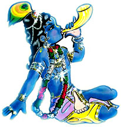
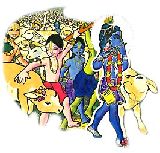

De la Antigua India vienen las misticas y encantadoras historias de Gopal el pastorcito de vacas. Viviendo la simple vida de un chico travieso, Gopal es en verdad una de las encarnaciones de Vishnu. Sus aventuras en el bosque de Vrindavan traen alegria y asombro a quienes las escuchan. Dotado con poderes y riquezas ilimitadas, Gopal Krishna muestra una y otra vez que su fuerza mas grande es el amor y afecto por sus devotos, amigos, vacas y todas las entidades vivientes.
Hace mucho tiempo atrás, en el bosque de Vrindavan - India, Gopal jugaba con sus amigos como cualquier otro niño.
